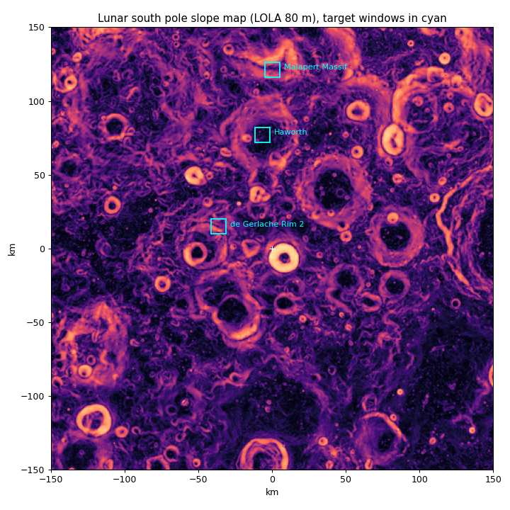
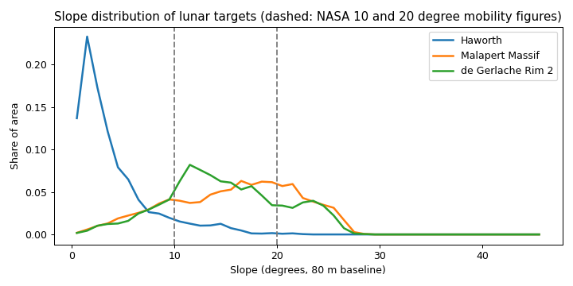

Progress
To discuss (answer in chat by ID)
Checks
Decisions so far
Phase 1: lunar targets (10 km windows, 80 m data)
Sources: LOLA elevation, slope and permanent shadow (NASA PGDA product 90, Barker et al. 2023); average sunlight (PGDA product 69, Mazarico). Centres approximate.
South pole overview

Slope distributions
